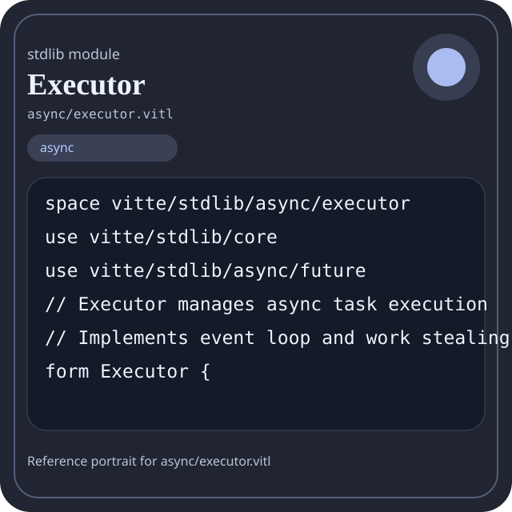

Stdlib module async/executor.vitl
This page is a wiki-style reference for one concrete stdlib file. It explains what the file owns, where it fits in the family, and how to decide whether this is the right surface to depend on.

async/executor.vitl.Family: async
Kind: public stdlib surface
Page style: this reference follows the same “encyclopedic card + portrait + usage contract” logic as the keyword pages, but for stdlib modules.
Summary
Overview
| Field | Value |
|---|---|
| Path | async/executor.vitl |
| Family | async |
| Kind | public stdlib surface |
| Line count | 274 |
| Declared procedures | 18 |
| Declared forms/picks | 3 |
`async/executor.vitl` is a public stdlib surface inside the `async` family. It should be read as one focused slice of the broader family responsibility: Future, channel, executor, and task orchestration helpers.
Purpose
This file should be chosen because of responsibility, not because its name “sounds close enough”. Inside the async family, it carries one focused part of the contract and keeps that responsibility separate from neighboring concerns.
- Use this module when coordination and scheduling are explicit parts of the design.
- A pipeline can spawn tasks, exchange messages through channels, and join through the executor boundary.
Top-level API inventory
| Surface | Items |
|---|---|
| Procedures | executor_new, executor_spawn, executor_schedule_at, executor_run, run_task, check_scheduled_tasks, executor_pause, executor_resume, executor_task_state, executor_stats, executor_shutdown, executor_has_unfinished |
| Forms | Executor, Task, ExecutorStats |
| Picks | none declared at top level |
| Constants | none declared at top level |
Imported surfaces
vitte/stdlib/core use vitte/stdlib/async/future // Executor manages async task execution // Implements event loop and work stealing scheduler form Executor { running
How to use this module
Start by reading the file as an ownership boundary. Ask three questions: what enters this module, what stable types or procedures it exports, and what adjacent module should stay outside of it.
- Open the family page first to understand why this area of the stdlib exists.
- Read the source excerpt below to see the namespace, imports, and first declared surfaces.
- Check the neighbor list to avoid coupling this module with an adjacent responsibility by habit.
Source shape
space vitte/stdlib/async/executor
use vitte/stdlib/core
use vitte/stdlib/async/future
// Executor manages async task execution
// Implements event loop and work stealing scheduler
form Executor {
running: bool,
tasks: [Task],
task_counter: int,
ready_queue: [int],The excerpt is not meant to replace the file. It exists to make the module recognizable at first glance, the same way a Wikipedia infobox helps the reader orient before reading the whole article.
Integration boundaries
Within async, this file should remain focused. If a future helper changes the host boundary, scheduling boundary, or data-shape boundary, it probably belongs in a neighbor module instead of being added here by convenience.
- Family responsibility: Future, channel, executor, and task orchestration helpers.
- Family architecture role: Use `async` when work should be coordinated as tasks rather than as direct thread ownership.